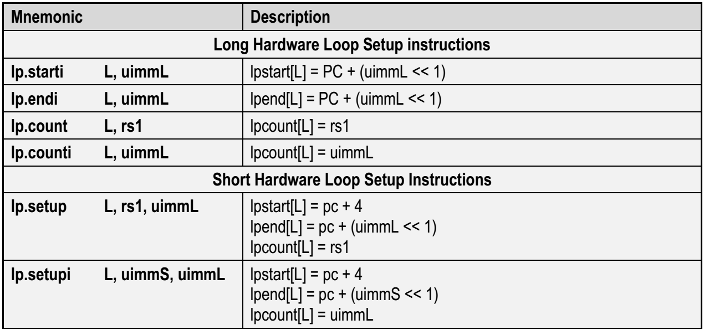
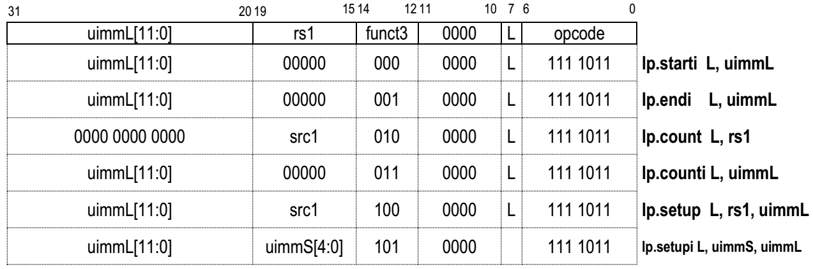
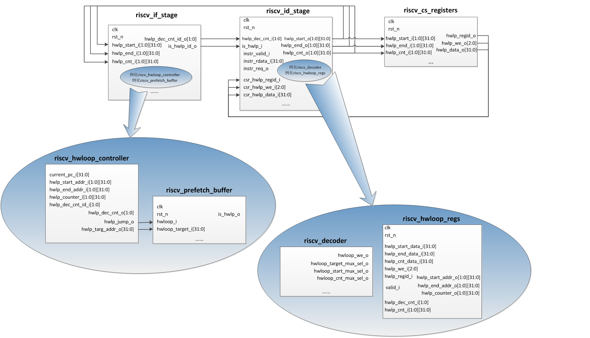

sec4 RI5CY HardwareLoop
8.4 硬件循环机制分析
8.4.1 硬件循环介绍
硬件循环是RI5CY引入的一项特殊机制，目的是提高包含有循环操作的代码的执行效率，如下是一段包含有循环操作的C代码。
for(i=0;i<100;i++){
d[i]=a[i]+1;
}
mv x4, 0
mv x5, 100
Lstart: lw x2, 0(x10)
addi x10, x10, 4
addi x2, x2, 1
sw x2, 0(x11)
addi x11, x11, 4
addi x4, x4, 1
bne x4, x5, Lstart
lp.setupi 100, Lend
lw x2, 0(x10)
addi x10, x10, 4
addi x2, x2, 1
sw x2, 0(x11)
Lend: addi x11, x11, 4
8.4.2 硬件循环相关的CSR
为了实现硬件循环，在RI5CY中定义了一些CSR寄存器，用来保存硬件循环代码段的一些属性，上一节中使用的指令lp.setupi就是用来设置这些寄存器的。每一个硬件循环代码段对应三个CSR，分别保存硬件循环代码段的起始地址、终止地址、循环次数，RI5CY支持嵌套硬件循环，相应的CSR分为两组，对应loop0、loop1，如表8-7所示。 表8-7 硬件循环相关的CSR
| 地址 | 名称 | 访问属性 | 描述 |
| 0x7B0 | lpstart[0] | 可读可写 | 硬件loop0的起始地址 |
| 0x7B1 | lpendt[0] | 可读可写 | 硬件loop0的终止地址 |
| 0x7B2 | lpcount[0] | 可读可写 | 硬件loop0的循环次数 |
| 0x7B4 | lpstart[1] | 可读可写 | 硬件loop1的起始地址 |
| 0x7B5 | lpend[1] | 可读可写 | 硬件loop1的终止地址 |
| 0x7B6 | lpcount[1] | 可读可写 | 硬件loop1的循环次数 |
8.4.3 硬件循环相关的指令
除了8.4.1节中用到的指令lp.setupi外，还有很多指令用来设置硬件循环，这些指令可以分两类，一类是长指令，一类是短指令，其区别如下。 * 长指令：每条指令只能设置硬件循环属性中的一条，比如只能设置硬件循环起始地址，但是该类指令不需要紧跟着硬件循环代码段。 * 短指令：每条指令可以设置硬件循环的全部属性，包括硬件循环的起始地址、终止地址、循环次数等，但是该类指令需要紧跟着就是硬件循环代码段。 硬件循环相关指令如表8-8所示，其编码如图8-20所示。 表8-8 硬件循环相关指令[6] 
 图8-20 硬件循环相关指令的编码[6]
8.4.4 硬件循环实现过程
RI5CY中与硬件循环实现有关的模块，如图8-21所示，包括如下： * 流水线取指阶段模块riscv_if_stage，其中例化了riscv_hwloop_controller、riscv_prefetch_buffer两个与硬件循环实现有关的模块 * 流水线译码阶段模块riscv_id_stage，其中例化了riscv_decoder、riscv_hwloop_regs两个与硬件循环实现有关的模块 * 控制与状态寄存器模块rscv_sc_registers  图8-21 RI5CY中与硬件循环实现有关的模块 图8-21中对部分模块只给出了与硬件循环实现有关的输入输出接口，并简单绘制了其接口连接关系。下面结合图8-21，以及硬件循环指令执行过程，分析硬件循环实现原理。 硬件循环相关指令在进入流水线的译码阶段时，才被识别出来，具体是在riscv_decoder模块中，相关代码如下，其中instr_rdata_i是从取指阶段传递过来的指令，OPCODE_HWLOOP是一个宏定义，其值是7'h7b，参考图8-20可知，正是硬件循环指令的opcode。随后，依据指令第12-14bit的值，进一步判断是哪一条硬件循环指令，并给出输出信号hwloop_we_o，以及一些复用选择信号的值，其中hwloop_we_o共有3bit，第0bit表示是否是设置循环段起始地址，第1bit表示是否是设置循环段结束地址，第2bit表示是否是设置循环次数。
module riscv_decoder
(
......
// from IF/ID pipeline
input logic [31:0] instr_rdata_i, // instruction read from instr memory/cache
output logic [2:0] hwloop_we_o, // write enable for hwloop regs
output logic hwloop_target_mux_sel_o, // selects immediate for hwloop target
output logic hwloop_start_mux_sel_o, // selects hwloop start address input
output logic hwloop_cnt_mux_sel_o, // selects hwloop counter input
......
);
always_comb
begin
......
hwloop_we = 3'b0;
hwloop_target_mux_sel_o = 1'b0;
hwloop_start_mux_sel_o = 1'b0;
hwloop_cnt_mux_sel_o = 1'b0;
.......
unique case (instr_rdata_i[6:0])
OPCODE_HWLOOP: begin
hwloop_target_mux_sel_o = 1'b0;
unique case (instr_rdata_i[14:12])
3'b000: begin
// 是lp.starti指令:设置循环段起始地址
hwloop_we[0] = 1'b1;
hwloop_start_mux_sel_o = 1'b0;
end
3'b001: begin
// 是lp.endi指令:设置循环段结束地址
hwloop_we[1] = 1'b1;
end
3'b010: begin
// 是lp.count指令:设置循环次数，其值就在读出的寄存器rega中
hwloop_we[2] = 1'b1;
hwloop_cnt_mux_sel_o = 1'b1;
rega_used_o = 1'b1;
end
3'b011: begin
// 是lp.counti指令:设置循环次数，其值是指令中立即数的值
hwloop_we[2] = 1'b1;
hwloop_cnt_mux_sel_o = 1'b0;
end
3'b100: begin
// 是lp.setup指令:需要设置循环段起始地址、结束地址、循环次数，其中循环次数读出的寄存器rega的值
hwloop_we = 3'b111;
hwloop_start_mux_sel_o = 1'b1;
hwloop_cnt_mux_sel_o = 1'b1;
rega_used_o = 1'b1;
end
3'b101: begin
// 是lp.setupi指令:需要设置循环段起始地址、结束地址、循环次数，其中循环次数是指令中立即数的值
hwloop_we = 3'b111;
hwloop_target_mux_sel_o = 1'b1;
hwloop_start_mux_sel_o = 1'b1;
hwloop_cnt_mux_sel_o = 1'b0;
end
default: begin
illegal_insn_o = 1'b1;
end
endcase
End
......
assign hwloop_we_o = (deassert_we_i) ? 3'b0 : hwloop_we;
// 硬件循环有两组寄存器，指令的第7bit表示是要操作哪一组寄存器
assign hwloop_regid_int = instr[7];
// hwloop target mux
always_comb
begin
case (hwloop_target_mux_sel)
1'b0: hwloop_target = pc_id_i + {imm_iz_type[30:0], 1'b0};
1'b1: hwloop_target = pc_id_i + {imm_z_type[30:0], 1'b0};
endcase
end
// 硬件循环起始地址的两种情况，一种是当前指令地址加一个立即数的值，另一种是下一条指令地址的值
always_comb
begin
case (hwloop_start_mux_sel)
1'b0: hwloop_start_int = hwloop_target; // for PC + I imm
1'b1: hwloop_start_int = pc_if_i; // for next PC
endcase
end
// 硬件循环次数的两种情况，一种是立即数，另一种是读出的寄存器的值
always_comb
begin : hwloop_cnt_mux
case (hwloop_cnt_mux_sel)
1'b0: hwloop_cnt_int = imm_iz_type;
1'b1: hwloop_cnt_int = operand_a_fw_id;
endcase;
end
// 最终确定要写的硬件循环相关寄存器的情况
assign hwloop_start = hwloop_we_int[0] ? hwloop_start_int : csr_hwlp_data_i;
assign hwloop_end = hwloop_we_int[1] ? hwloop_target : csr_hwlp_data_i;
assign hwloop_cnt = hwloop_we_int[2] ? hwloop_cnt_int : csr_hwlp_data_i;
assign hwloop_regid = (|hwloop_we_int) ? hwloop_regid_int : csr_hwlp_regid_i;
assign hwloop_we = (|hwloop_we_int) ? hwloop_we_int : csr_hwlp_we_i;
module riscv_hwloop_regs
#(
parameter N_REGS = 2,
parameter N_REG_BITS = $clog2(N_REGS)
)
(
input logic clk,
input logic rst_n,
// from ex stage
input logic [31:0] hwlp_start_data_i,
input logic [31:0] hwlp_end_data_i,
input logic [31:0] hwlp_cnt_data_i,
input logic [2:0] hwlp_we_i,
input logic [N_REG_BITS-1:0] hwlp_regid_i, // selects the register set
// from controller
input logic valid_i,
// from hwloop controller
input logic [N_REGS-1:0] hwlp_dec_cnt_i,
// to hwloop controller
output logic [N_REGS-1:0] [31:0] hwlp_start_addr_o,
output logic [N_REGS-1:0] [31:0] hwlp_end_addr_o,
output logic [N_REGS-1:0] [31:0] hwlp_counter_o
);
logic [N_REGS-1:0] [31:0] hwlp_start_q;
logic [N_REGS-1:0] [31:0] hwlp_end_q;
logic [N_REGS-1:0] [31:0] hwlp_counter_q, hwlp_counter_n;
int unsigned i;
assign hwlp_start_addr_o = hwlp_start_q;
assign hwlp_end_addr_o = hwlp_end_q;
assign hwlp_counter_o = hwlp_counter_q;
// 设置硬件循环的起始地址
always_ff @(posedge clk, negedge rst_n)
begin : HWLOOP_REGS_START
if (rst_n == 1'b0)
begin
hwlp_start_q <= '{default: 32'b0};
end
else if (hwlp_we_i[0] == 1'b1)
begin
hwlp_start_q[hwlp_regid_i] <= hwlp_start_data_i;
end
end
// 设置硬件循环的结束地址
always_ff @(posedge clk, negedge rst_n)
begin : HWLOOP_REGS_END
if (rst_n == 1'b0)
begin
hwlp_end_q <= '{default: 32'b0};
end
else if (hwlp_we_i[1] == 1'b1)
begin
hwlp_end_q[hwlp_regid_i] <= hwlp_end_data_i;
end
end
// 设置硬件循环的执行次数，并且在每次执行一遍后，将执行次数减一
genvar k;
for (k = 0; k < N_REGS; k++) begin
assign hwlp_counter_n[k] = hwlp_counter_q[k] - 1;
end
always_ff @(posedge clk, negedge rst_n)
begin : HWLOOP_REGS_COUNTER
if (rst_n == 1'b0)
begin
hwlp_counter_q <= '{default: 32'b0};
end
else
begin
for (i = 0; i < N_REGS; i++)
begin
if ((hwlp_we_i[2] == 1'b1) && (i == hwlp_regid_i)) begin
hwlp_counter_q[i] <= hwlp_cnt_data_i;
end else begin
if (hwlp_dec_cnt_i[i] && valid_i)
hwlp_counter_q[i] <= hwlp_counter_n[i];
end
end
end
end
// do not decrement more than one counter at once
assert property (
@(posedge clk) (valid_i) |-> ($countones(hwlp_dec_cnt_i) <= 1) );
Endmodule
module riscv_hwloop_controller
#(
parameter N_REGS = 2
)
(
// from id stage
input logic [31:0] current_pc_i,
// from hwloop_regs
input logic [N_REGS-1:0] [31:0] hwlp_start_addr_i,
input logic [N_REGS-1:0] [31:0] hwlp_end_addr_i,
input logic [N_REGS-1:0] [31:0] hwlp_counter_i,
// to hwloop_regs
output logic [N_REGS-1:0] hwlp_dec_cnt_o,
// from pipeline stages
input logic [N_REGS-1:0] hwlp_dec_cnt_id_i,
// to id stage
output logic hwlp_jump_o,
output logic [31:0] hwlp_targ_addr_o
);
logic [N_REGS-1:0] pc_is_end_addr;
// end address detection
integer j;
// 下面的代码判断当前正在取的指令地址current_pc_i是否等于任一硬件循环段的结束地址
// 如果当前正在取的指令地址current_pc_i等于任一硬件循环段的结束地址，并且对应的hwlp_cnt_o不等于1
// 那么设置pc_is_end_addr为1
genvar i;
generate
for (i = 0; i < N_REGS; i++) begin
always @(*)
begin
pc_is_end_addr[i] = 1'b0;
if (current_pc_i == hwlp_end_addr_i[i]) begin
if (hwlp_counter_i[i][31:2] != 30'h0) begin
pc_is_end_addr[i] = 1'b1;
end else begin
case (hwlp_counter_i[i][1:0])
2'b11: pc_is_end_addr[i] = 1'b1;
2'b10: pc_is_end_addr[i] = ~hwlp_dec_cnt_id_i[i]; // only when there is nothing in flight
2'b01, 2'b00: pc_is_end_addr[i] = 1'b0;
endcase
end
end
end
end
endgenerate
// 如果pc_is_end_addr是1，那么表示跳转到硬件循环段的起始地址继续执行
always_comb
begin
hwlp_targ_addr_o = 'x;
hwlp_dec_cnt_o = '0;
for (j = 0; j < N_REGS; j++) begin
if (pc_is_end_addr[j]) begin
hwlp_targ_addr_o = hwlp_start_addr_i[j];
hwlp_dec_cnt_o[j] = 1'b1;
break;
end
end
end
// output signal for ID stage
assign hwlp_jump_o = (|pc_is_end_addr);
Endmodule
参考文献
[1]PULP - An Open Parallel Ultra-Low-Power Processing-Platform, http://iis-projects.ee.ethz.ch/index.php/PULP,2017-8 [2]Florian Zaruba, Updates on PULPino, The 5th RISC-V Workshop, 2016. [3]Michael Gautschi,etc,Near-Threshold RISC-V Core With DSP Extensions for Scalable IoT Endpoint Devices, IEEE Transactions on Very Large Scale Integration Systems [4]Andreas Traber, Michael Gautschi,PULPino: Datasheet,2016.11 [5]http://www.pulp-platform.org/ [6]Andreas Traber,Michael Gautschi,Pasquale Davide Schiavone. RI5CY: User Manual version1.3. [7]Andreas Traber, etc. PULPino: A small single-core RISC-V SoC. The 4th RISC-V Workshop, 2016.